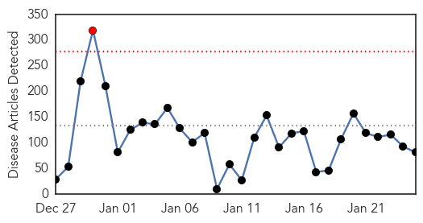
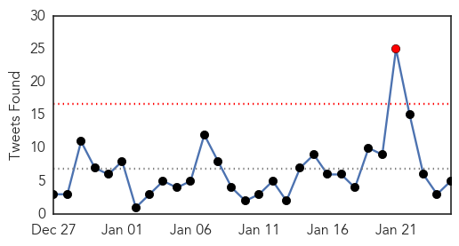
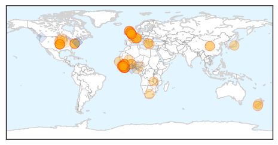
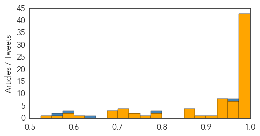
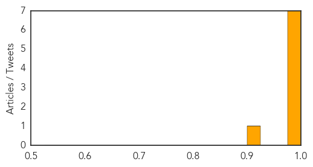

Ebola
30-Day Web Trend
1 alerts, 0 warnings

30-Day Twitter Trend
1 alerts, 0 warnings

Article Locations
Article Confidences
Top Articles:
- 1.000
- Tide turning in Ebola fight after hard lessons
- 1.000
- Is it possible to catch the Ebola virus more than once?
- 1.000
- As Ebola cases dwindle, officials try to learn lessons for future
- 1.000
- Tide turning in Ebola fight after hard lessons
- 1.000
- Tide turning in Ebola fight after hard lessons
- 1.000
- Five major U.S. airports to screen travelers from West Africa fo
- 1.000
- After hard lessons, tide turns in Ebola fight
- 1.000
- Ebola fight turns tide after hard lessons
- 1.000
- Ebola outlook improving in West Africa
- 1.000
- Ebola outlook improving in West Africa
- 1.000
- Ebola outlook improving in West Africa
- 1.000
- Ebola crisis: 'Too slow' WHO promises reforms
- 0.999
- Report by the Director-General to the Special Session of the Executive Board on Ebola
- 0.999
- Ebola: Origins of an African epidemic
- 0.999
- Queenstown man's warning on Ebola 'turning point'
- 0.999
- The Portland Press Herald / Maine Sunday Telegram
- 0.999
- MBITIRU: Signs are that West Africa may soon be declared Ebola-free - Opinion
- 0.998
- Otago Daily Times Online News : Otago, South Island, New Zealand & International News
- 0.998
- Ebola Almost Eradicated in Liberia, Vaccine Expected To Hit Next Week
- 0.997
- WHO vows reform after Ebola 'shocks'
- 0.996
- World Health Organization mulls reforms to repair reputation after bungling Ebola outbrteak
- 0.996
- WHO mulls reforms to repair reputation after bungling Ebola
- 0.995
- UN health agency to hold special weekend session on Ebola; warns against donor fatigue
- 0.994
- WHO calls for revamp after ′too slow′ Ebola response
- 0.994
- WHO mulls reforms to repair reputation after bungling Ebola
- 0.994
- WHO promises reforms
- 0.994
- WHO Mulls Reforms to Repair Reputation After Bungling Ebola
- 0.993
- the edge of knowledge
- 0.993
- Just five Ebola cases left in Liberia – UN
- 0.992
- Liberians Excited Over Arrival Of 300 Vials Of Ebola Vaccine To Help Reduce The High Rate Of Death From This Deadly Virus
- 0.992
- British Ebola nurse discharged from hospital
- 0.991
- Presbyterian Health Service Supports Ebola Isolation Unit
- 0.991
- Presby Health Service distributes equipment to health workers.
- 0.990
- Ebola – 16 more viruses in bats 'waiting to spread to humans'
- 0.989
- WHO mulls reforms to repair reputation after bungling Ebola
- 0.987
- WHO mulls reforms to repair reputation after bungling Ebola crisis
- 0.986
- Zambia's 10 million bats may hold clue to Ebola
- 0.985
- WHO pledges reforms as it admits Ebola mistakes
- 0.985
- Tide turning in Ebola fight
- 0.983
- UK nurse and Ebola virus patient makes full recovery
- 0.979
- WHO, under fire, to develop ‘surge capacity’ in post-Ebola crises
- 0.979
- Ebola Spurs WHO Plan for Health Reserves After Missteps
- 0.977
- Trials for Ebola vaccines
- 0.974
- WHO chief admits significant failings in Ebola response
- 0.973
- Ebola Slowed French Investment In Ivory Coast
- 0.971
- Sierra Leone Eases Business Restrictions As Ebola Subsides
- 0.963
- Spanish Ebola nurse whose dog Excalibur was put down amid riots adopts new pet 'Alma' – Spanish for 'Soul'
- 0.961
- WHO adopts reforms to repair reputation after bungling Ebola
- 0.959
- British nurse who contracted Ebola now free of virus
- 0.959
- Ebola Crisis Shows Changes Needed
Showing top 50 articles...
Top Tweets:
- 0.957
- A whole generation at risk from infectious disease? @AARP perhaps measles mumps more dangerous to 50+ than Ebola in USA
- 0.793
- Importance of artists in public health: Ebola Deeply wi Sierra Leone's Jimmy B & link 2 Ebola 4 Go: http://t.co/6OnabpRprJ Ebolatatatata
- 0.629
- RT: WHO Executive Special Session on Ebola has adjourned with the adoption of resolution on Ebola by Member States EB136
- 0.596
- RT: Support & @PaulGAllen help tackle Ebola. Wear ur pins tonite. It's working! TackleEbola RipCity http://t.…
- 0.557
- [IBTIMES] Ebola Outbreak Update: Only Five Cases Left In Liberia Report Says http://t.co/uRNMA7SwGe EBOLANEWS
Swine Flu
30-Day Web Trend
8 alerts, 4 warnings

30-Day Twitter Trend
0 alerts, 0 warnings

Article Locations

Article Confidences
Top Articles:
- 1.000
- Read Health News & Articles at TheHealthSite.com
- 1.000
- Swine flu deaths push toll to 21, health department on high alert
- 0.999
- 49-year-old man tests positive for swine flu
- 0.997
- Ready to Take on Swine Flu, Govt Launches 24x7 Helpline
- 0.996
- 12 More Test Positive for Swine Flu, City on High Alert
- 0.990
- Swine flu vaccine makers wary about ramping up production
- 0.987
- Telangana remains on high alert for swine flu
- 0.910
- 35 fresh swine flu cases in Telangana
Top Tweets:
-
No tweets found for Jan 25, 2015